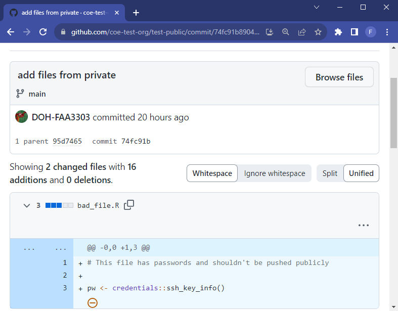

.gitignore
# excel files
*.xlsx
*.xls
# logs
*.log
# text files
*.txt
# RDS Objects
*.RDSObjectives
.gitignore, hooksIf sensitive information is leaked and commited to the remote repo, then they will stay in the git history (and will require a lot of effort to remove them from the history). The following cannot be included in any repo or any local commit!:
| Type | Examples |
|---|---|
| File Paths |
|
| Server Names |
|
| Credentials |
|
| Identifiable Information |
|
It is bad practice and a security risk to add private credentials to a script. If your script contains things like passwords, server names, or network drives, be aware that that information will be publicly visible when you push it to a remote git/github repo. Many of our scripts must call passwords and server names in order for them to work properly, so we need a way to hide that information from the public but still be able to run the scripts locally. .gitignore can help achieve this.
In the root of your repo there should be a file called .gitignore. This files contains a list of file types that we don’t want to be added to the remote git repo. Here’s an example:
consider this .gitignore:
.gitignore
# excel files
*.xlsx
*.xls
# logs
*.log
# text files
*.txt
# RDS Objects
*.RDSIt contains anything with an excel, log, txt or RDS extension. This means that any file with those extensions that you create in your local clone of the repo will exist for you, but the file cannot and will not ever be pushed to the remote repo.
We can store private information in local files and make sure that the do not get pushed to the public remote repo by using .gitignore. There are a number of ways to do this. We typically use a yaml file that can be filled out with personal credentials locally. The file will not be committed to the remote repo.
There are many ways to achieve this. If you have a more simple workflow that uses R, consider the .Renviron approach. If you have a more complex workflow that has multiple languages and many credentials, consider the yaml approach
If you’re using just R in your repo and have just a few things you want private, consider using a .Renviron file in addition to .gitignore.
In the .gitignore, add .Renviron:
.gitignore
# R Environment Variables
.RenvironCreate a .Renviron file at the root of you local repo
Add the things you want to be kept private
.Renviron
my_password="thisismypassword123"Now in an R script you can call that password and hide the credentials instead of writting the password in the script for everyone to see:
good_script.R
my_password <- Sys.getenv('my_password')bad_script.R
my_password <- "thisismypassword123"Sys.getenv() looks for the .Renviron file and the variables inside of it. This means you can get all your credentials from the .Renviron but also keep that information
Here’s another way to add credentials that may be more robust.
Many of our scripts use a .yml file that contains a list of API tokens, server names, and usernames/passwords specific to each individual user. There are two .yml files. One is a template (containing no actual passwords..) that exists in the repo and serves as a template so every individual user can keep up to date with new credential additions. The other is the individual creds.yml that is in the repo’s .gitignore. This file will never exist in the repo and only exist locally (in the user’s C drive).
The .yml file can work with multiple programming languages including R and Python. They are read in the same way and can be easily adjusted when adding new passwords or using them as configuration files. It can work like this:
.gitignore, add a new line that says creds.yml..gitignore
# creds files
creds.ymlIn the root of you local git clone, make a file called creds.yml.
In the yaml file you can nest values. For example, under conn_list_wdrs I have all the parameters needed to make a SQL server connection string in R/Python:
creds.yml
# Default is needed to distinguish values.
# Leave a blank line (NO SPACES) as the last line in this file or things will break
# Quotes aren't necessary, but can be used.
default:
conn_list_wdrs:
Driver: "SQL Server Native Client 11.0"
Server: "someservername"
Database: "db"
Trusted_connection: "yes"
ApplicationIntent: "readonly"
fulgent:
username: <USERNAME>
password: <PASSWORD>script.R
library(yaml)
# read in the local credentials yaml file
creds <- yaml::read_yaml("creds.yml")$default
# call in the variables
connection <- DBI::dbConnect(
odbc::odbc(),
Driver = creds$conn_list_wdrs$Driver,
Server = creds$conn_list_wdrs$Server,
Database = creds$conn_list_wdrs$Database,
Trusted_connection = creds$conn_list_wdrs$Trusted_connection,
ApplicationIntent = creds$conn_list_wdrs$ApplicationIntent
)script.py
import yaml
# read credentials
with open(f"creds.yml") as f:
creds = yaml.safe_load(f)['default']
conn = pyodbc.connect(
DRIVER=creds['conn_list_wdrs']['Driver'],
SERVER=creds['conn_list_wdrs']['Server'],
DATABASE=creds['conn_list_wdrs']['Database'],
Trusted_Connection=creds['conn_list_wdrs']['Trusted_connection'],
ApplicationIntent=creds['conn_list_wdrs']['ApplicationIntent']
)test parameter:creds.yml
# Default is needed to distinguish values.
# Leave a blank line (NO SPACES) as the last line in this file or things will break
# Quotes aren't necessary, but can be used.
default:
conn_list_wdrs:
Driver: "SQL Server Native Client 11.0"
Server: "someservername"
Database: "db"
Trusted_connection: "yes"
ApplicationIntent: "readonly"
fulgent:
username: <USERNAME>
password: <PASSWORD>
test:
conn_list_wdrs:
Driver: "SQL Server Native Client 11.0"
Server:
Database:
Trusted_connection:
ApplicationIntent: This is useful to organized and automatically call different parameters. Now there is a test list with its own variables. This lets us switch a set of variables within our scripts. default applies to the main credentials where test can distinguish which variables should be test or dev scripts specific. Notice below that you can now call the credentials from a .yml file into an R or Python script and the actual credentials will never exist in the code pushed to the repo.
script-in-repo.R
# this script is in the repo, but credentials are hidden
library(yaml)
# read in the local credentials yaml file
creds <- yaml::read_yaml("path/to/local-credentials.yml")
# pull in the credentials
server_name <- creds$default$conn_list_wdrs$serverWe can even get more specific and add an if-else statement to specify which credential we want to select. This can be helpful if we have a CI/CD pipeline and have a script automatically run on a task scheduler or cron job. We can call the credentials we want in the command line and have the command line code run in my task scheduler. That way we can use multiple different versions of the same script and have all of it be automated.
For example,
commandArgs() to pull any arguments passed to the script in a shell/command line script.production and test as second arguments.arg[2].arg[2] in the if-else statement to conditionally select credentials and do it automatically in a pipeline.script-in-repo.R
args <- commandArgs(TRUE)
# this script is in the repo, but credentials are hidden
library(yaml)
# read in the local credentials yaml file
creds <- yaml::read_yaml("path/to/local-credentials.yml")
# pull in the credentials
if(args[2] == "production"){
server_name <- creds$default$conn_list_wdrs$server
} else if(args[2] == "test"){
server_name <- creds$test$conn_list_wdrs$server
}shell-trigger-script.sh
# Run the production code
$ Rscript -e "source('path/script_in_repo.R');" production
# Run the test/dev code
$ Rscript -e "source('path/script_in_repo.R');" test You can put a template creds.yml file in your repo so that others can see what credentials they need in order for the code to run.
This is a template file, so it will not have any passwords/secrets in it. Its only purpose is to provide an example copy of what a user’s creds.yml file needs to look like.
Make a template called creds_TEMPLATE.yml
Remove any passwords, usernames, secrets, etc to have it be a file that looks like this:
creds_TEMPLATE.yml
# Default is needed to distinguish values.
# Leave a blank line (NO SPACES) as the last line in this file or things will break
# Quotes aren't necessary, but can be used.
default:
conn_list_wdrs:
Driver:
Server:
Database:
Trusted_connection:
ApplicationIntent:
fulgent:
username:
password:
test:
conn_list_wdrs:
Driver:
Server:
Database:
Trusted_connection:
ApplicationIntent: creds_TEMPLATE.yml template in your repo, make sure that nobody on your team (or anyone with write access..) is able to accidentally push changes to the template. We don’t want someone’s passwords or API tokens to exist in GitHub.This link shows how to skip any changes made to the specific file https://stackoverflow.com/a/39776107. If someone makes local changes to the template, the changes will not show in their commit. It is a safe guard.
For all individual users, run this code:
PowerShell
git update-index --skip-worktree creds_TEMPLATE.ymlThis will tell your local git to ignore any changes made to creds_TEMPLATE.yml, but also allow it to exist in the repo (since .gitignore will prevent it from being in the repo)
If you need to update the template file run this:
PowerShell
git update-index --no-skip-worktree creds_TEMPLATE.ymlThis will allow changes to the template. So when you need to update the template, use this code
And to get a list of files that are “skipped”, use this code:
PowerShell
git ls-files -v . | grep ^SUsing a .gitignore file for environmental variables/credentials is an excellent guardrail and promotes good coding habits, but we may also want additional guardrails such as hooks.
Hooks are processes that run in the background and can prevent code from being pushed if there is a security flaw. There are two hooks we could use for security; pre-commit hooks and pre-receive hooks
Pre-commit hooks run a process locally when the user attempts to commit code to a git branch. Hooks have many uses. Here we can use them as a security guardrail to prevent accidental credential leaks in committed code. For example, if someone accidentally pushes a server name to the public repo, the hook will prevent that code from ever getting into the remote repo and will give the user a local error.
Follow the instructions below to set up pre-commit hooks in your repo.
Clone or download the zip from the AWS Git Secrets repo
Extract zip or cd to the repo
Open folder and right click install.ps1.
Alternatively, in the powershel terminal you can change directories cd to the repo and .\install.ps1
CD cd to a directory where you have the git repository you want to upload, either in PowerShell or R studio terminal
PowerShell
PS > cd path/to/repo/rootRun git secrets –install
PowerShell
git secrets --installMake or copy the regex file called secrets_key containing the secret patterns into your folder.
frank.aragona@doh.wa.gov for more information.Make sure the file secrets_key is in your .gitignore. We can’t push that to the remote repo.
Run git secrets --add-provider -- cat ./secrets_key
PowerShell
git secrets --add-provider -- cat ./secrets_keyYou can also add prohibited patterns like this
PowerShell
# add a pattern
git secrets --add '[A-Z0-9]{20}'
# add a literal string, the + is escaped
git secrets --add --literal 'foo+bar'
# add an allowed pattern
git secrets --add -a 'allowed pattern'Test Git history by running
PowerShell
git secrets --scan-historyIf something gets flagged and you don’t care about your history anymore: Delete .git folder and reinitialize repository
Test on one of my projects to see if rebasing is a sustainable option
Make repo public
Will automatically scan on every commit and won’t let it commit unless it’s clean - Create a few files to show it working
We can’t use the “Non capture group” feature of regex. Meaning we can’t use patterns like this in our regex: (?:abc) – see https://regexr.com IMPORTANT: Tab separate your regex expressions. Making new lines caused a bit of chaos and took really long to figure out. (you can use multiple tabs to separate them more visually)
Clone the AWS Git Secrets repo
In the terminal, cd to the repo
Install the command:
terminal
sudo make installcd to a directory where you have the git repository you want to push to
terminal
cd path/to/repo/rootYou may need to add this file to your $PATH variables.
run nano .bashrc to get your bash profile:
terminal
nano .bashrcthen down arrow key to get to the last line in the file
add the path like this:
terminal
export PATH=$PATH:/user/local/bin/git-secrets\hit CTRL + O then ENTER to save
hit CTRL + X to exit
start a new terminal and write this to see your path variables.
git-secrets should be in there somewhere now
terminal
echo $PATHRun git secrets –install
terminal
git secrets --installMake or copy the regex file called secrets_key containing the secret patterns into your folder.
frank.aragona@doh.wa.gov for more information.Make sure the file secrets_key is in your .gitignore. We can’t push that to the remote repo.
Run git secrets --add-provider -- cat ./secrets_key
terminal
git secrets --add-provider -- cat ./secrets_keyYou can also add prohibited patterns like this
terminal
# add a pattern
git secrets --add '[A-Z0-9]{20}'
# add a literal string, the + is escaped
git secrets --add --literal 'foo+bar'
# add an allowed pattern
git secrets --add -a 'allowed pattern'Test Git history by running
terminal
git secrets --scan-historyIf something gets flagged and you don’t care about your history anymore: Delete .git folder and reinitialize repository
Test on one of my projects to see if rebasing is a sustainable option
Make repo public
Will automatically scan on every commit and won’t let it commit unless it’s clean - Create a few files to show it working
We can’t use the “Non capture group” feature of regex. Meaning we can’t use patterns like this in our regex: (?:abc) – see https://regexr.com IMPORTANT: Tab separate your regex expressions. Making new lines caused a bit of chaos and took really long to figure out. (you can use multiple tabs to separate them more visually)
NOTE!!
secrets_key file may be decievinggit secrets --scan-history may take a very long time to runNow that the pre-commit hook is set up, any future commits to your repo will be scanned for secrets. If you are pushing a pre-existing repo to a public repo for the first time, you should scan the existing code in the repo because the pre-commit hook will not automatically do that. They are really set up to prevent any future secrets from being pushed to the repo, not to scan what is currently in the repo.
There are a few ways to scan the history of your repo for secrets. The git secrets command comes with a few options to scan the history, but I have found that it is a bit broken.
git secrets --scan-history command will run forever if you have a large repo (especially if you have html files in it)git secrets --scan *glob)git secrets --scan directory/*Check that the secrets_key regex is working by running the process on a repo that you know has secrets in it. For example, in a different folder, run all the pre-commit hook steps above and add a known “bad” string into the regex. For example, in the regex put bad_string and in a file in that folder put bad_string. When you scan it should get flagged.
If secret scanning is taking too long, you might want to check certain files first. I’ve found that HTML files take a very long time to scan for secrets.
Follow the instructions below to scan for specific files. The script will scan for all the file types that you select. For example, if you want to only scan R files, it will only scan R files.
secret-scanner9000.ps1
# Example Usage
# write this in the powershell terminal, adjust for the file type(s) you want to scan - can be multiple types: $fileExtensions = @(".R", ".py")
# then execute this in the terminal: ScanFiles -FileExtensions $fileExtensions
# It will give you an output of any secrets that are contained in those files
Function ScanFiles{
param (
[string]$filePath = (Get-Location).Path,
[string[]]$fileExtensions
)
Get-ChildItem $filePath -recurse | Where-Object {$_.extension -in $fileExtensions} |
Foreach-Object {
git secrets --scan $_.FullName
}
}PowerShell
$fileExtensions = @(".R",".py",".Rmd",".qmd")PowerShell
ScanFiles -FileExtensions $fileExtensionsbash
find . -type f \( -name "*.R" -o -name "*.py" -o -name "*.qmd" -o -name "*.rmd" -o -name "*.md" \) -print0 | xargs -0 -I {} git secrets --scan {}-o -name "*.NEW_TYPE" to the find command args:find . -type f \( -name "*.R" -o -name "*.py" -o -name "*.qmd" -o -name "*.rmd" -o -name "*.md" -o -name "*.NEW_TYPE" \) -print0 | xargs -0 -I {} git secrets --scan {}These are still being investigated. They are remote hooks (not local like pre-commit hooks) that can be deployed throughout the Github organization. They can block certain commits from ever being pushed to the remote repo. They may make things unnecessarily complicated
We may wish to take private codes and push them to a public repo. We need to make sure that the public code doesn’t not contain sensitive or forbidden data/code, so cleaning up the private repo is important before pushing.
There are a few ways to do this, but the easiest way is to copy the clean private code to the public repo, that is, copy all the files you want to add publicly but do not copy the .git folder. If the private repo has a dirty git history we will not want that history in the public repo because the sensitive data will then be publicly available.


The private repository on the left still contains sensitive information in the git history. The public repository on the right has a clean git history because we copied only the current clean files from the private repo and did not attach its git history (which lives in the hidden .git folder)
With the guardrails above in place there should be few chances that credentials get pushed to a repo. However accidents may still happen. We want to make sure that anyone who opens up a repo in the Github organization adheres to the rules, has the proper credential/coding set-up, and installs their local pre-commit hooks properly.
It may be useful to have a team within the organization that helps with repo set-up. The team would help avoid a scenario where a person opens up a repo without reading this documentation and understanding the rules (and thus potentially breaking security rules).
This Github Operations Team could also be helpful in managing permissions for members in the organization. See the video below on how the company Qualcomm manages their Github organization https://www.youtube.com/embed/1T4HAPBFbb0?si=YRsUYXIxLPhdr41T and how they use a Github Operations Team to guide new members access/repo development